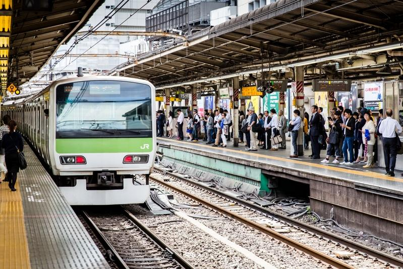

日本连日飙高温不仅造成部分民众急救送医甚至疑似中暑死亡，这几天还发生电车司机员在列车行驶中突感摇晃，原因是铁轨在炎热天气的高温下变形，部分路段因此一度暂停行驶。
日本朝日新闻报导，鹿儿岛县日置市的JR鹿儿岛线，今天因为铁轨变形造成市来站到鹿儿岛中央站间一度停驶。
JR九州公司表示，铁轨因为酷暑温度升高进而产生变形。
JR九州表示，今天下午2时左右，一列行驶在伊集院站附近的列车驾驶突然「感觉左右摇晃」，因而回报行控中心。
日本气象厅表示，今天日置市最高温为34.9度，而在鹿儿岛市区为36.1度、伊佐市为37.8度。
除了日置市外，读卖新闻报导，一列电车在8月1日下午3时25分左右行经熊本县宇城市小川町的JR鹿儿岛线小川站附近时，司机员突然感到左右摇晃，经过现地调查确认是因为天气太热造成铁轨变形。
另外，行经岐阜县的长良川铁道，8月2日也被发现铁轨变形，一度造成部分路段列车停驶，研判应是受到猛暑影响。